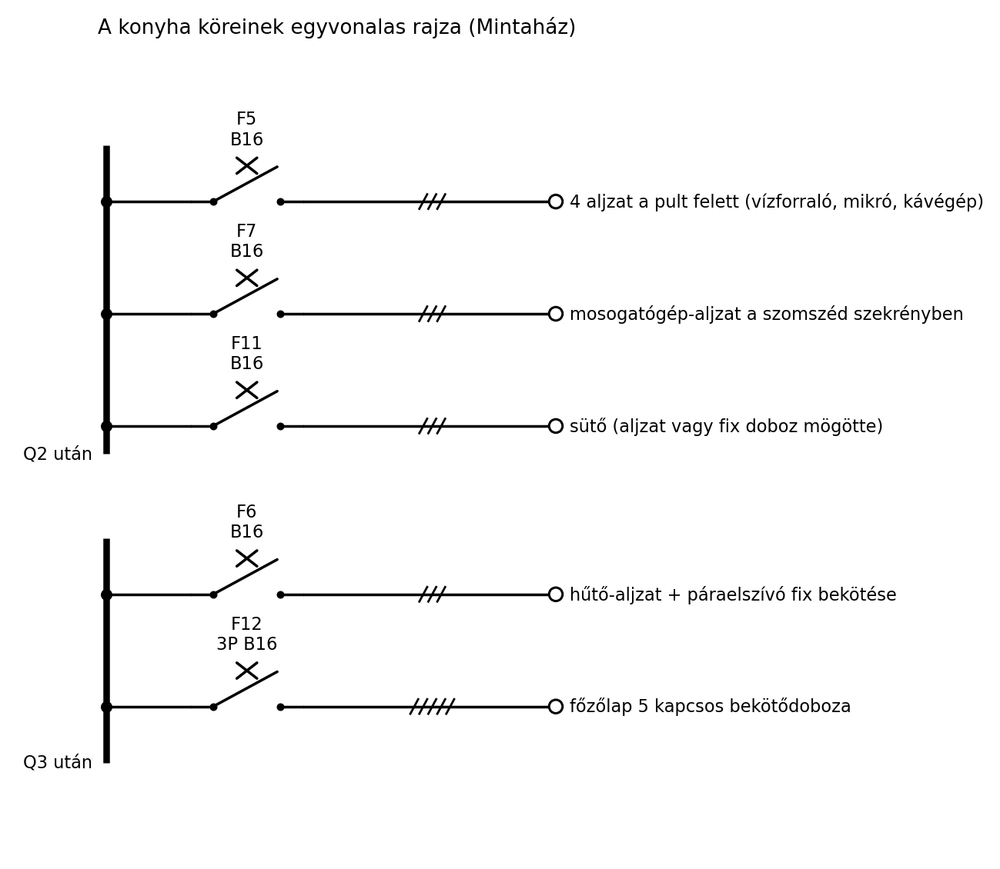

![Lakáselosztó aljzatköri részlete FI-relével (többvonalas) - Egyfázisú aljzatkör (Mintaház F5 konyhai pultköre a Q2 FI-csoportban): Q2 30 mA-es áram-védőkapcsoló (egy készülék; a Mintaházban négypólusú, itt csak az L- és N-pólusa látszik; az L-pólusánál a kioldó/IΔn jel, az N-pólusa közös működtetésű érintkező; az L és az N is áthalad rajta), F5 B16 kismegszakító az L-ben, X1 földelt aljzat L, N és PE kapoccsal. A PE nem megy át a FI-n, közvetlenül a PE-sínről jut az aljzatra. Szemléltető rajz, nem kivitelezési terv.](assets/ve059-diagram-1.png)
Egy lakásfelújítás során a szerelő nemcsak azt dönti el, hogy hová kerüljön aljzat, hanem azt is, hogy hány aljzat kapcsolódhat egyetlen áramkörre, mekkora vezeték és mekkora védő tartozik elé, és hogy az adott helyiségben – konyha, fürdőszoba, terasz, pince – milyen kiegészítő védelmi szabályok érvényesek. A rossz tervezés két tipikus következménye: a kismegszakító állandó leoldása, vagy ami rosszabb, a vezeték tartós túlterhelése, ami melegedést, szigeteléskárosodást és tűzveszélyt okoz. Ebben az alfejezetben az aljzatköröket, a nagyobb fogyasztók csatlakoztatását és a nedves, illetve kültéri helyiségek különleges követelményeit járjuk körbe, a Terhelhetőség, melegedés és javítótényezők alfejezetben tanult lánc alkalmazásával.
Motiváció. Nincs értelme minden aljzatot egyetlen 16 A-es körre kötni, ha a nappaliban egyszerre üzemel a porszívó és a hősugárzó; viszont az sem jó, ha minden szobához külön vastag vezetéket húzunk felesleges többletköltséggel. A gyakorlatban a helyiségek használati módjából és a várható fogyasztókból indulunk ki.
Szabály. Az aljzatkörök számát a szabvány nem rögzíti fix darabszámként; a tervezésnek azt kell biztosítania, hogy a várható egyidejű terhelés egyetlen körön se haladja meg a védőkészülék névleges áramát, és a védőkészülék névleges árama a vezeték terhelhetőségénél ne legyen nagyobb. Lakossági környezetben a legelterjedtebb megoldás: 16 A-es B jelleggörbéjű kismegszakító, rézvezeték, és legfeljebb hibaáramú áram-védőkapcsoló. Tervezési gyakorlat szerint egy általános aljzatkörre jellemzően 6–10 aljzat köthető, de ezt a tényleges terhelés dönti el (ellenőrizendő: a konkrét létesítési gyakorlat és az áramkörök számának előírása a hatályos MSZ HD 60364 sorozatban).
Számítás – nappali aljzatkör terhelése.
Tegyük fel, hogy a nappaliban a következő fogyasztókat kívánják
egyszerre használni:
Az összes üzemi teljesítmény:
Egyfázisú, -os körön az üzemi áram:
Ez nagyobb, mint a 16 A-es kismegszakító névleges árama, tehát egyetlen aljzatkör nem elég. Osszuk két körre:
Mindkét körhöz rézvezetéket és B16 kismegszakítót választunk. A vezeték terhelhetősége például falba süllyesztett védőcsőben, egyerű PVC-szigetelésű rézvezetőkkel (B1) (lásd a Vezetékek és kábelek szerelési módjai alfejezetet; ellenőrizendő: MSZ HD 60364-5-52; csoportosítási vagy hőmérsékleti tényezővel ez csökkenhet). Ellenőrizzük az láncot:
A választás mindkét körre megfelel.
A hazai lakásszerelés aljzatköre sugaras (radiális): az elosztó egy kismegszakítójától indul, és a vezeték a kör utolsó aljzatánál ér véget. Az aljzatok kétféleképpen kapcsolódhatnak rá:
| Szempont | (a) Felfűzés | (b) Leágaztatás |
|---|---|---|
| Anyag | kevesebb (nincs összekötő, kevesebb doboz) | több (összekötők, esetleg kötődoboz) |
| Szerelési idő | rövidebb | hosszabb |
| Megbízhatóság | egy laza kapocs vagy egy kiszerelt aljzat a teljes továbbmenő szakasz L, N és PE folytonosságát megszakítja | az aljzat cseréje nem bontja a továbbmenő vezetőket |
| Hibakeresés | a hiba a „láncban” bárhol lehet | a hibás aljzat önállóan leválasztható |
A felfűzés legnagyobb veszélye, hogy a PE-szakadás nem jelzi magát: a továbbmenő aljzatokban a készülékek működnek, csak a hibavédelem hiányzik. Az alábbi ábra a két megoldást és egy aljzatcsere következményét mutatja.
A HTML-kiadásban bármelyik aljzat „kiszerelhető”: az oldal megmutatja, mely aljzatok maradnak L, N vagy PE nélkül a két felépítésnél. Ellenőrzés: ha felfűzött körben egy aljzat cseréjekor csak a PE-t felejted el visszakötni, melyik mérés veszi észre (a Mérések I.: folytonosság, szigetelési ellenállás, földelés alfejezet védővezető-folytonossági mérése)?
Miért nem gyűrűs? Angol nyelvű anyagokban gyakran szerepel a gyűrűs aljzatkör (ring final circuit): a 2,5 mm²-es vezeték az elosztóból indul, végigjárja az aljzatokat, és visszatér ugyanarra a 32 A-es védelemre. Ez brit gyakorlat; a hazai előírások és a 16 A-es aljzatokhoz illő méretezés sugaras kört feltételeznek, ezért a könyv a gyűrűs kört nem tanítja (ellenőrizendő: a hazai alkalmazhatóság, MSZ HD 60364-4-43). Ha a gyakorlatban két végén ugyanarra a kismegszakítóra kötött kört találsz, az hiba vagy idegen terv – tisztázd a tervezővel.
Továbbvitt eredmény. Az méretezési láncot és a korrigált meghatározását az aljzatkörök után a Csatlakozás a közcélú hálózathoz, mérőhely alfejezetben a mérőhely és a fővezeték méretezésénél is használjuk.
Az aljzatkörök védelmét szemlélteti a következő ábra:
Az ábrán felül az L fázisvezető: a betáplálás után a 30 mA-es Q2 FI-relé (a Mintaház négypólusú FI-je, itt csak az L- és N-pólusa látszik), majd az F5 B16 kismegszakító következik, és innen megy a vezeték az X1 aljzat L kapcsára. Az N vezető is átmegy a Q2 FI-relén (csak így érzékelheti az L és az N áramának különbségét), majd az aljzat N kapcsára jut. A PE nem halad át a FI-n: a PE gyűjtősínről közvetlenül az aljzat védőérintkezőjére csatlakozik.
Szabvány. Az MSZ HD 60364-4-41 szerint a legfeljebb 32 A névleges áramú, általános használatra szolgáló csatlakozóaljzatokat kiegészítő védelemként legfeljebb névleges hibaáramú áram-védőkapcsolóval kell védeni. Ez a kiegészítő védelem nem helyettesíti az alapvédelmet és a hibavédelmet. A pontos alkalmazási feltételeket a hatályos szabványkiadás tartalmazza (ellenőrizendő: a szabvány aktuális szakasza és az RCD-követelmény).
A lakossági elosztóban a nagyfogyasztóknak általában saját áramkört alakítanak ki, hogy a meghibásodás vagy túlterhelés ne üsse ki a többi aljzatot és világítást.
Tűzhely (villanytűzhely).
A tűzhelyek egyfázisú és háromfázisú csatlakozással is készülnek.
A tűzhely vagy a főzőlap nem dugaszolással, hanem fix bekötéssel csatlakozik (ellenőrizendő: a gyártói szerelési utasítás és MSZ HD 60364-5-55): a falban egy öt kapcsos tűzhelybekötő doboz fogadja a lakáselosztóból érkező kábelt (a Mintaházban az F12 kör NYM-J 5×2,5 kábele), és innen a készülék saját csatlakozókábele (jellemzően H05VV-F 5G2,5, vagy amit a gyártó előír) megy a készülék kapocstáblájára. A kör védelme háromfázisú bekötésnél egyetlen háromfázisú (3P) kismegszakító, amely mindhárom fázist egyszerre bontja (lásd a Lakás- és épületelosztó felépítése alfejezet kidolgozott példáját), előtte 30 mA-es FI.
A készülék kapocstáblájának öt kapcsa: 1, 2, 3 a fázisoknak, 4 és 5 a nullának, mellettük a PE. A gyári hidak (fémlemezek) kötik össze a kapcsokat úgy, hogy ugyanaz a készülék háromféleképpen is beköthető legyen. Az alábbi ábra a három változatot egymás mellett mutatja. A kapocsléc-hidak és a bekötés tanműhelyi gyakorlata a Lakáselosztó építése és bekötése alfejezetben szerepel.
Érszínek: barna L1, fekete L2, szürke L3, világoskék N, zöld-sárga PE. A hidak helye gyártófüggő – mindig a készülék kapocsfedelén lévő bekötési rajz a mérvadó (ellenőrizendő). A HTML-kiadásban a három változat egyenként nagyítható. Nézd meg az ábrán: melyik hidat kell eltávolítani, ha egy 2N~ módra előkészített készüléket háromfázisú hálózatra kötsz?
Számítás – egy 7,2 kW-os főzőlap a három módban (egyenletes zónaeloszlást feltételezve):
A 2N~ mód a 16 A-es védelem határán van: csak akkor megfelelő, ha a gyártó a készülék teljesítményét erre a módra korlátozza (ellenőrizendő: gyártói adatlap). Az 1N~ módhoz 32 A-es védelem és nagyobb keresztmetszet kell (6 mm²; ellenőrizendő: a szerelési módban), ezért egyfázisú lakásban a nagy főzőlap csak korlátozott teljesítménnyel köthető be.
Ellenőrzés bekötés után.
Tipikus hiba. (1) 3N~ bekötésnél bent maradt a 2–3 híd: az L2 és az L3 a hídon át összeér – fázis–fázis zárlat, azonnali kismegszakító-, rosszabb esetben főbiztosító-kioldás. (2) Hiányzik a 4–5 N-híd: az 5-ös kapocsra kötött zónák nullája szakadt, ezek a zónák nem működnek (vagy két zóna sorba kapcsolódik a fázisok között, és rendellenesen melegszik).
Bojler (vízmelegítő).
Egy 2 kW-os bojler üzemi árama:
Önálló körként 10 A-es B kismegszakító és legalább rézvezeték választható, feltéve, hogy a vezeték korrigált terhelhetősége legalább 10 A (). Gyakorlatban a bojlerkört is gyakran vezetékkel alakítják ki, és 30 mA-es RCD-vel védik.
A bojler hibáinak („nem melegít”, „kiold a FI”) felderítéséhez ismerni kell a belső kapcsolását. Az alábbi rajz a Mintaház F10 bojlerkörét mutatja a lakáselosztótól a fűtőbetétig.
![Villanybojler bekötése: körvédelem, helyi leválasztás, belső kapcsolás - Alapállapot (feszültségmentes, hideg tartály). A Mintaház F10 B16 bojlerköre a Q3 FI-csoportban (a Q3 négypólusú, itt csak az L és N pólusa látszik). Q4 kétpólusú helyi leválasztó kapcsoló (ellenőrizendő: hol kötelező). A bojler kapocsdobozában F2 hőkorlátozó (kézi visszaállítású; gyártótól függően kétpólusú is lehet), B1 termosztát, R1 2 kW-os fűtőbetét, vele párhuzamosan H1 jelzőlámpa. A PE nem halad át kapcsolón: a tartály fém testére csatlakozik. Tanulási példa.](assets/ve059-diagram-2.png)
A fázis útja: Q3 FI → F10 B16 → Q4 kétpólusú helyi leválasztó kapcsoló (ellenőrizendő, hol kötelező) → a bojler kapocsdobozában az F2 hőkorlátozó (túlmelegedéskor bont, kézzel kell visszaállítani; gyártótól függően kétpólusú is lehet) → a B1 termosztát (a beállított hőmérsékleten bont) → az R1 fűtőbetét → N. A H1 jelzőlámpa a fűtőbetéttel párhuzamos, ezért akkor ég, amikor a betét feszültséget kap. A PE nem halad át kapcsolón: a tartály fém testére csatlakozik; a bojler kiegészítő egyenpotenciálra hozását az Egyenpotenciálra hozás: fő- és kiegészítő EPH alfejezet tárgyalja.
Számítás – a fűtőbetét ellenőrző ellenállása. A 2 kW-os, 230 V-os betét ellenállása
Feszültségmentes ellenőrzéskor (a betét vezetékeit lekötve) ennek közelében kell mérni (hidegen kissé eltérhet); szakadásnál a mért érték végtelen (betéthiba). Az L–PE szigetelési ellenállás kis értéke vízköves, repedt betétre utal – ez a FI-kioldás tipikus oka.
| Tünet | Valószínű ok | Ellenőrzés |
|---|---|---|
| Nem melegít, a jelzőlámpa nem ég | kioldott hőkorlátozó, rossz termosztát vagy nincs táp (F10, Q4) | táp a kapocsdobozban; a hőkorlátozó állapota; a termosztát folytonossága feszültségmentesen |
| A jelzőlámpa ég, de nem melegít | szakadt fűtőbetét | a betét ellenállása feszültségmentesen: a 26,45 Ω helyett |
| Bekapcsoláskor kiold a FI | a betét szigetelési hibája (vízkő, repedés) | szigetelésmérés L–PE: az érték a határérték alatt (ellenőrizendő: MSZ HD 60364-6) |
A vezérelt („éjszakai”) áramról táplált bojler bekötését a Csatlakozás a közcélú hálózathoz, mérőhely alfejezet vezérelt mérésről szóló része mutatja.
Klíma.
A klímaberendezések saját kört kapnak, mert a kompresszor indítási árama
rövid időre többszöröse is lehet az üzemi áramnak. Egy készülék
hűtőteljesítménye például
,
a felvett villamos teljesítménye
.
Az üzemi áram:
A névleges áram kicsi, de a bekapcsolási csúcs miatt 16 A-es B kismegszakítót és vezetéket alkalmaznak. Ha a klíma csatlakozóaljzaton keresztül táplált, akkor a 30 mA-es RCD-védelem is szükséges.
A klímánál a szerelő feladata a saját kör, a kültéri leválasztó és a két egység villamos összekötése; a hűtőköri munka (vákuumozás, hűtőközeg-töltés) nem villanyszerelői feladat. A Mintaház F13 klímakörét az alábbi egyvonalas rajz mutatja.
![Klímaberendezés tápellátása egyvonalas rajzon - Egyvonalas rajz (tanulási példa, Mintaház F13): Q2 FI (A típus; inverteres készüléknél a gyártó F vagy B típust is előírhat – ellenőrizendő) → F13 B16 (ellenőrizendő: gyártói ajánlás B vagy C) → NYM-J 3×2,5 → Q5 lakatolható szervizkapcsoló a kültéri egység mellett (IP54/IP65; ellenőrizendő: előírás és gyártó) → kültéri egység (M1, fém teste PE-n) → 4 eres összekötő kábel a beltéri egységhez (L, N, kommunikációs ér, PE; gyártófüggő, ellenőrizendő). A táp a gyártótól függően a beltéri egységre is érkezhet.](assets/ve059-diagram-3.png)
A tápot a gyártótól függően a kültéri vagy a beltéri egység kapja; a rajz a kültéri betáplálást mutatja. A két egység közötti összekötő kábel (jellemzően 4 ér: L, N, kommunikációs ér, PE) nem helyettesíthető tetszőleges kábellel: a kommunikációs ér feszültsége és a keresztmetszet gyártói előírás (ellenőrizendő). A kültéri egység mellé lakatolható szervizkapcsoló (Q5, IP54/IP65 burkolatban) kerül, hogy a karbantartó a kültéri egységnél leválaszthassa a tápot (ellenőrizendő: előírás és gyártói utasítás). A kültéri egység fém testét PE-re kell kötni. Inverteres készüléknél a FI legalább A típusú legyen; a gyártó F vagy B típust is előírhat (lásd Áram-védőkapcsoló (FI) és kiegészítő védelem; ellenőrizendő).
Átadási ellenőrzőlista.
Ezek a fogyasztók általában 16 A-es saját kört igényelnek vezetékkel, és mivel víz közelében üzemelnek, 30 mA-es RCD-vel védettek. A nedves helyiségben való elhelyezésük további zónaszabályokat hoz be, amelyeket a következő szakasz tárgyal.
Az alábbi konyhai falnézet azt mutatja, hogyan jelenik meg ez a körosztás a szerelésben. A lakáselosztóból (1) három kör indul: a pult feletti aljzatok (2) egy általános aljzatkörön (A kör), a mosogatógép aljzata (4) saját B16-os körön (M kör), a háromfázisú tűzhely (6) pedig saját 3×16 A-es körön, ötvezetékes bekötődobozba (5) érkezik (T kör). A kábelek nyomvonala (3) vízszintes és függőleges sávokban fut, hogy később is tudni lehessen, hol van vezeték a falban.
A jelenet szándékosan nem tartalmaz magasságot: a szerelési sávokat és magasságokat a terv és a szerelési sávokról szóló előírás határozza meg. A tűzhely bekötésének három módját a fenti, „A tűzhely és a főzőlap bekötése” pont mutatja. A HTML-kiadásban a köröket egyenként ki-be kapcsolhatod.
A konyhában a Mintaház öt köre találkozik. A körtáblázat a fenti falnézet köreit a fix fogyasztókkal együtt rendszerezi (a számok a Mintaház és Kisüzem függelékkel és a Lakás- és épületelosztó felépítése alfejezet teljes elosztórajzával egyeznek):
| Kör | Fogyasztók | Csatlakozás módja | Védelem | Kábel | |
|---|---|---|---|---|---|
| F5 (Q2, L2) | pult feletti aljzatok: vízforraló, mikró, kávégép | 4 aljzat a pult felett | B16 | NYM-J 3×2,5 | 10,9 A (2 500 W) |
| F6 (Q3, L3) | hűtő + páraelszívó | aljzat a szekrényben / fix bekötés a kürtőnél | B16 | NYM-J 3×2,5 | 2,0 A (450 W) |
| F7 (Q2, L3) | mosogatógép | aljzat a szomszéd szekrényben | B16 | NYM-J 3×2,5 | 8,7 A (2 000 W) |
| F11 (Q2, L1) | beépített sütő | aljzat vagy fix doboz a sütő mögött/alatt | B16 | NYM-J 3×2,5 | 15,2 A (3 500 W) |
| F12 (Q3, L1–L3) | főzőlap | 5 kapcsos bekötődoboz | 3P B16 | NYM-J 5×2,5 | 10,4 A (7 200 W) |
Az egyvonalas rajzon ugyanez a két FI-csoport szerint rendezve látszik:

Szabályok a konyha kiosztásához.
A fürdőszoba és a zuhanyzó különleges helyiség, mert a víz csökkenti a bőr ellenállását, és a nedves környezetben a hibás szerelvény közvetlen életveszélyt jelenthet. Ezért a szabvány külön zónákat határoz meg, és azokban korlátozza a villamos szerelvények feszültségét és védettségét.
Szabvány. Az MSZ HD 60364-7-701 jelű, fürdő- és zuhanyzóhelyiségekre vonatkozó szabvány zónabeosztást és IP-védettségi követelményeket ír elő. Az itt bemutatott zónahatárok, távolságok és védettségi fokozatok tájékoztató jellegűek; mindig a hatályos kiadás szerint kell ellenőrizni.
A leggyakrabban használt zónabeosztás:
Az alábbi ábra a zónákat kád mellett oldalnézetben (a) és alaprajzon (b), valamint tálca nélküli zuhanynál alaprajzon (c) mutatja. Kádnál a 0. zóna a kád belseje, az 1. zóna a kád fölött a kész padlószinttől mért 2,25 m magasságig tart, a 2. zóna a kád szélétől további 0,6 m-ig (1,7 m-es kádnál a faltól 2,3 m-ig). A körrel jelölt helyeken a szerelvény elhelyezhető (SELV-lámpa és rögzített vízmelegítő az 1. zónában, 230 V-os lámpatest a 2. zónában), a kereszttel jelöltekben nem: aljzat és kapcsoló csak a zónákon kívülre kerülhet. Tálca nélküli zuhanynál az 1. zóna a rögzített vízkifolyótól mért 1,2 m sugarú térrész (ellenőrizendő: MSZ HD 60364-7-701).

Az interaktív változatban kád, zuhanytálca vagy tálca nélküli zuhany választható; az aljzatot, lámpatestet, SELV-lámpát, kapcsolót vagy vízmelegítőt kattintással elhelyezve az oldal kiírja a zónát, azt, hogy a szerelvény ott elhelyezhető-e, és milyen IP-fokozat, illetve RCD-védelem kell hozzá.
A fürdőszobai aljzatoknál a helyes gyakorlat az, hogy az aljzatot a mosdókagylótól és zuhanyzótól minél távolabb, a 2. zónán kívülre teszik, saját RCD-s körre, és a szerelvény IP44-es vagy magasabb védettségű. A pontos zónahatárokat a szabvány aktuális kiadása adja meg.
A szerelés szemszögéből az alábbi falnézet foglalja össze a szabályokat. Az 1. zónában (1) a rögzített vízmelegítő (3) elhelyezhető, IPX4 védettséggel; a 2. zónában (2) rögzített, legalább IPX4-es szerelvény lehet, dugaszolóaljzat nem. A mennyezeti lámpatest (4) a 2,25 m-es zónahatár fölött, a tükörlámpa (5) és a fedeles aljzat (6) a mosdónál, a 2. zónán kívül van; a kapcsoló (7) a helyiségen kívül, az ajtó mellett. A 2. zónába tett aljzat (8) hibás – ez a „Valós életbeli alkalmazás” esete.
Az ábra tanulási példa: a zónaméretek a fenti felsorolást követik, de a hatályos MSZ HD 60364-7-701 és a hazai eltérések szerint ellenőrizni kell őket (ellenőrizendő). A szerelvény kiválasztásának sorrendje mindig ugyanaz: először a zónát határozd meg, utána a szerelvényt és a védettséget. A HTML-kiadásban a zónák rétege kikapcsolható, és az egyes szerelvényekre mutatva a feltételük olvasható.
Megjegyzés. A zónahatárok értelmezésekor a kád vagy zuhanytálca széleitől kell mérni; a falra szerelt zuhanyfej esetén a vízsugár által elért térrész is a besorolást befolyásolja. Ezt mindig a tervben és a gyártói adatlapokkal együtt kell ellenőrizni.
Törölközőszárító radiátor. Az elektromos törölközőszárítót fixen kötjük be: a bekötődoboz a zónákon kívül, vagy a gyártó és a szabály által a 2. zónában megengedett helyen van, a leválasztást kétpólusú kapcsoló vagy termosztát adja, a kör pedig 30 mA-es áram-védőkapcsoló mögött van (ellenőrizendő: MSZ HD 60364-7-701 zónaszabályai, a készülék adatlapja és IP-fokozata).
Elektromos padlófűtés. A fűtőszőnyeg fém árnyékolását, illetve hálóját a védővezetőre (PE) kötjük. A kör termosztáton keresztül kap tápot, 30 mA-es FI mögött. A padlóérzékelőt védőcsőbe, két fűtőszál közé helyezzük, hogy cserélhető legyen. A fűtőszál ellenállását és a szigetelési ellenállást a burkolás előtt és után is megmérjük, és a jegyzőkönyvbe írjuk, mert a burkolat alatt a sérülés később csak bontással javítható (ellenőrizendő: gyártói szerelési utasítás).
Ventilátor. Az utánfutást beépített időzítővel vagy külön időrelével valósítjuk meg (16.3, „Fürdőszobai ventilátor utánfutással”); az időzítőnek állandó fázis is kell. A ventilátor IP-fokozata a beépítési zónához igazodjon.
Kiegészítő EPH. Meg kell vizsgálni, szükséges-e a helyi kiegészítő egyenpotenciálra hozás, és ha igen, mit kötünk be: fém kádat vagy zuhanytálcát, fémcsöveket és más idegen vezetőképes részeket, valamint a villamos fogyasztók PE-jét (ellenőrizendő: az MSZ HD 60364-7-701 aktuális előírása és a mentesség feltételei). A műanyag csőrendszer mellett lévő, földtől elszigetelt fémrész bekötése nem feltétlenül szükséges. A döntést és a mérést a 22.2 alfejezet tárgyalja.
Körvázlat (a Mintaház fürdője, bővítéssel).
Kültéren, teraszon, kertben és pincében az aljzatok fokozott nedvesség- és mechanikai hatásnak vannak kitéve, ezért:
A kültéri aljzat saját körön általában 16 A-es B kismegszakítóval és rézvezetékkel készül, a fedél pedig zárt állapotban is biztosítja a csepegő víz elleni védelmet.
Az alábbi oldalmetszet a kültéri aljzat felépítését és helyes beépítését mutatja. A ház (1) IP44-es vagy magasabb védettségű, a rugós fedél (2) magától záródik, és a tömítés (3) zárja le a házat az aljzatbetét (4) előtt. A kábel alulról, tömítő bevezetőn (5) át lép be, és előtte csepegőhurkot (6) képez, így a kábelen lefutó víz a hurok alján lecsöpög, nem a dobozba jut. A hibás változatban beltéri, fedél nélküli aljzat van kint, és a felülről bevezetett kábel mentén a víz a dobozba fut.
Átadás előtt ellenőrizd, hogy a fedél magától visszazáródik-e, a tömítés ép-e, és a bevezető szorosan fogja-e a kábelt. A HTML-kiadásban a részekre mutatva olvasható a szerepük, és a helyes, illetve hibás nézet külön is megjeleníthető.
Biztonsági korlát. A feladat tanműhelyi (törpefeszültségű) környezetre vagy jogosult oktató felügyeletére vonatkozik; hálózati feszültségen önállóan ne végezd.
Egy fürdőszobafelújítás során a szerelő 230 V-os aljzatot helyezett el a mosdókagyló fölött, közvetlenül a 2. zónán belülre, IP20-as szerelvénnyel, és nem védte RCD-vel. A felülvizsgálaton a mérnök megállapította, hogy az aljzat nem felel meg a zónabeosztásnak és a védettségi követelménynek, mert vízpermet érheti, és hiányzik az áram-védőkapcsolós kiegészítő védelem. A javítás az aljzat áthelyezése a 2. zónán kívülre, IP44-es szerelvény beépítése és saját 30 mA-es RCD-kör kialakítása volt. A tanulság: a fürdőszobai szerelvények esetében először a zónát kell meghatározni, és csak azután lehet kiválasztani a szerelvényt.
Gyakorlás: ennek az alfejezetnek a kidolgozott példái, gyakorlatai és megoldással ellátott feladatai az Összefoglaló feladatgyűjtemény villanyszerelő tanulóknak című kötet 16.4 szakaszában találhatók.
Az aljzatkörök tervezésénél a várható egyidejű terhelésből indulunk ki, és minden körre ellenőrizzük az láncot. Általános lakossági aljzatkörhöz 16 A-es B kismegszakító, rézvezeték és 30 mA-es RCD tartozik; a nagyfogyasztók (tűzhely, bojler, klíma, mosógép) saját kört kapnak. Fürdő- és zuhanyzóhelyiségekben a zónák (0., 1., 2.) és az IP-védettségek határozzák meg, hol és milyen szerelvény helyezhető el; 230 V-os aljzat a 2. zónán kívül, 30 mA-es RCD-vel és megfelelő védettséggel telepíthető. Kültéri és pincei aljzatoknál ugyancsak kötelező az RCD-védelem. Továbbvitt eredmény. Az aljzatkörök vezeték- és védelemválasztását, valamint az láncot a Csatlakozás a közcélú hálózathoz, mérőhely alfejezetben a mérőhely és a fővezeték méretezésénél alkalmazzuk.
A fejezetben hivatkozott szabványok az MSZ HD 60364 sorozat, elsősorban az MSZ HD 60364-4-41 (kiegészítő védelem), az MSZ HD 60364-7-701 (fürdő- és zuhanyzóhelyiségek) és az MSZ HD 60364-5-52 (vezetékek terhelhetősége). A zónahatárok, az IP-védettségek, a vezeték-terhelhetőségi értékek, a javítótényezők és az RCD-követelmények a szabvány aktuális kiadásától függnek; az itt szereplő számértékek tanulási példák, és üzemeltetés vagy tervezés előtt ellenőrizni kell a hatályos szabványt és a gyártói adatlapokat.